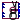
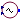
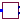
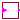

General models for PowerFactory devices
Extends from Modelica.Icons.Package (Icon for standard packages).
| Name | Description |
|---|---|
|  ElmGenstat | Static generator |
|  ElmVac | Controllable voltage source |
|  ElmPhi_pll | Phase-locked loop (PLL) |
|  Picdro | Pick-up drop-off implementation for protection functions |
Static generator
Static generator implemented currently only as a current source.
Extends from OpenIPSL.Electrical.Essentials.pfComponent (Partial model containing all the parameters for entering power flow data).
| Name | Description |
|---|---|
| Power flow data | |
| S_b | System base power [V.A] |
| V_b | Base voltage of the bus [V] |
| fn | System frequency [Hz] |
| P_0 | Initial active power [W] |
| Q_0 | Initial reactive power [var] |
| v_0 | Initial voltage magnitude [1] |
| angle_0 | Initial voltage angle [rad] |
| displayPF | Display power flow: |
| Generator parameters | |
| M_b | Machine base power [V.A] |
| pll_connected | Enable/disable use of PLL inputs |
| Parameter mask | |
| enableS_b | Enable S_b in parameter list |
| enableV_b | Enable V_b in parameter list |
| enablefn | Enable fn in parameter list |
| enableP_0 | Enable P_0 in parameter list |
| enableQ_0 | Enable Q_0 in parameter list |
| enablev_0 | Enable v_0 in parameter list |
| enableangle_0 | Enable angle_0 in parameter list |
| enabledisplayPF | Enable displayPF in parameter list |
| Name | Description |
|---|---|
| id_ref | |
| iq_ref | |
| p | |
| i | |
| v | |
| sinref | Optional PLL input for sine |
| cosref | Optional PLL input for cosine |
| P | |
| Q |
Controllable voltage source
Controllable voltage source with frequency and volage as inputs.
Extends from OpenIPSL.Electrical.Essentials.pfComponent (Partial model containing all the parameters for entering power flow data).
| Name | Description |
|---|---|
| Power flow data | |
| S_b | System base power [V.A] |
| V_b | Base voltage of the bus [V] |
| fn | System frequency [Hz] |
| P_0 | Initial active power [W] |
| Q_0 | Initial reactive power [var] |
| v_0 | Initial voltage magnitude [1] |
| angle_0 | Initial voltage angle [rad] |
| displayPF | Display power flow: |
| Parameter mask | |
| enableS_b | Enable S_b in parameter list |
| enableV_b | Enable V_b in parameter list |
| enablefn | Enable fn in parameter list |
| enableP_0 | Enable P_0 in parameter list |
| enableQ_0 | Enable Q_0 in parameter list |
| enablev_0 | Enable v_0 in parameter list |
| enableangle_0 | Enable angle_0 in parameter list |
| enabledisplayPF | Enable displayPF in parameter list |
| Name | Description |
|---|---|
| f0 | |
| v | |
| p |
Phase-locked loop (PLL)
| Name | Description |
|---|---|
| angle_0rad | |
| omega_0 | |
| v_0 | |
| PLLEnable | Enable/disable PLL (PLL not implemented yet) |
| Name | Description |
|---|---|
| p | |
| sinphi | |
| cosphi |
Pick-up drop-off implementation for protection functions
This function implements a logical pick-up-drop-off function commonly used when designingprotection schemes (e.g. fault detection, signal out-of-range, etc.).
| Name | Description |
|---|---|
| Tpick | Pick-up time delay [s] |
| Tdrop | Drop-off time delay [s] |
| Name | Description |
|---|---|
| condition | |
| trip |